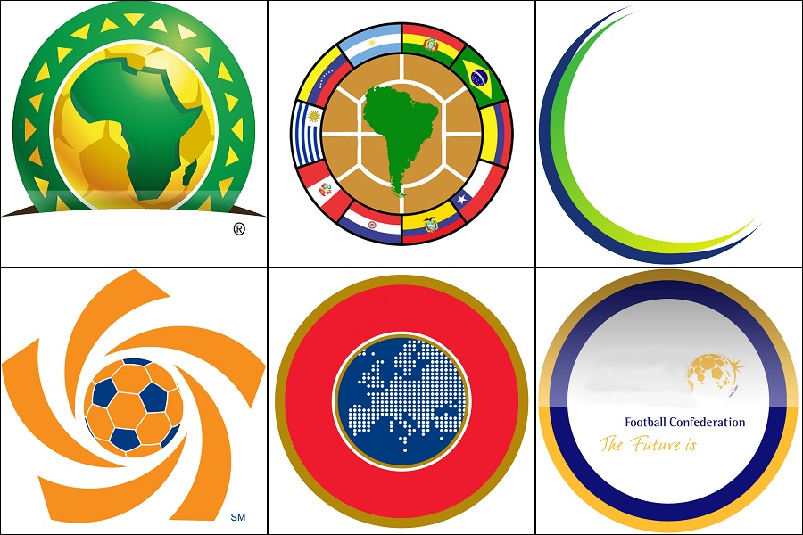

Which FIFA Confederation has the strongest performance?
FIFA, founded in 1904, is the international governing body for football, beach football and futsal. FIFA divides the countries in six regions (AFC, CAF, CONCACAF, CONMEBOL, OFC, UEFA). Each confederation implement an eliminatory process to define the countries representing them in the Wold Cup, which take place every 4 year. There have been 21 world cups within 1930 and 2018. UEFA (Europe) is the strongest confederation with the richest and best local leagues. The following graphs explore the performance of the confederations in the World Cups.
The FIFA confederations are the following:
- AFC = Asian Football Confederation in Asia and Australia.
- CAF = Confédération Africaine de Football in Africa.
- CONCACAF = Confederation of North, Central American and Caribbean Association Football in North America and Central America.
- CONMEBOL = Confederación Sudamericana de Fútbol
- OFC = Oceania Football Confederation in Oceania
- UEFA = Union of European Football Associations

CONMEBOL has slightly better average performance across all world cups.
CONMEBOL (South America) and UEFA (Europe) have won 8 and 12 world cups.
** The graph presents average performance between 1930 and 2018 world cups.